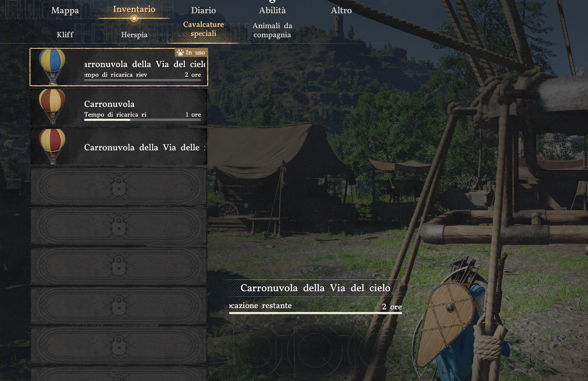
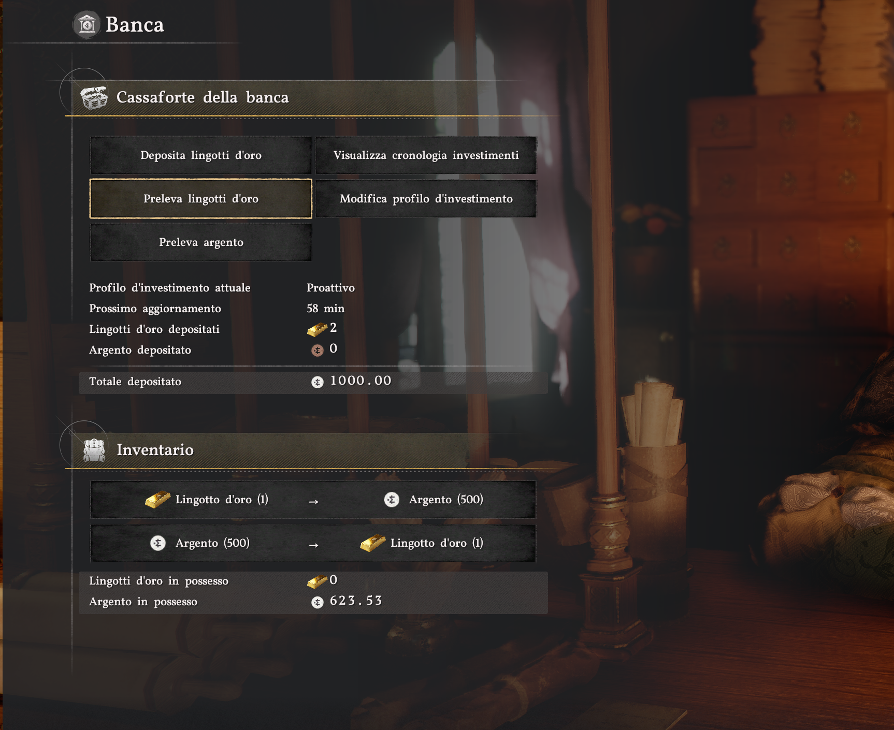
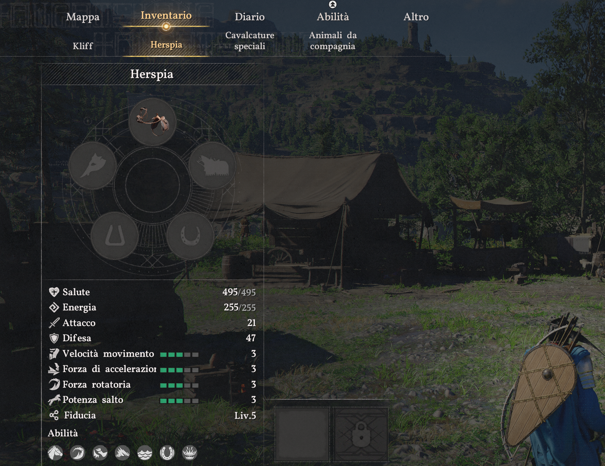
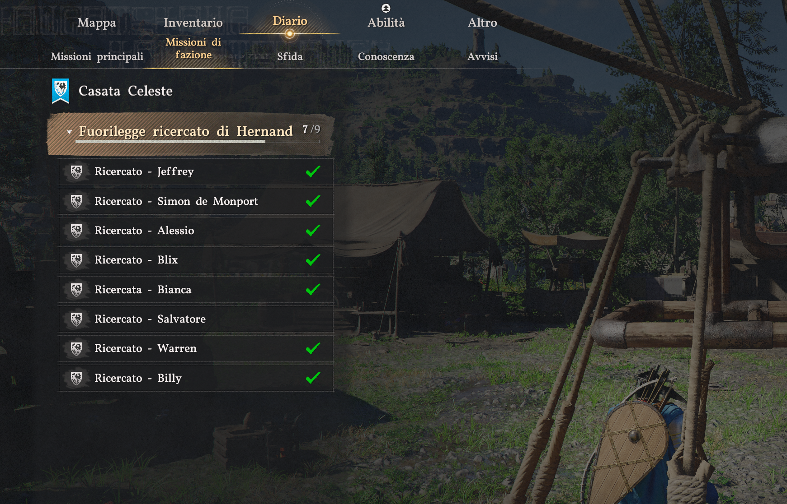

Situazione di Re Kliff
📜 La saga principale
Cinque capitoli chiusi col timbro. Il sesto è in arrivo. Adesso Re Kliff sta uscendo dalle ultime righe di "L'intruso" — l'unica cosa che lo separa dal Capitolo VI è un nido di Arpie a Pailune.

🐗 L'accampamento Mantogrigio — la casa dei Cinghiali
Sulla Collina Ululante, dove un tempo c'era il vecchio quartier generale dei Mantogrigio prima che gli Orsi Neri lo riducessero a cenere. Re Kliff l'ha ricostruito e ci ha messo dentro 12 cinghiali superstiti, uno per uno. È da qui che parte e qui che torna.

I 12 Cinghiali reclutati
- Carl
- Ronald
- Ben
- Tristan
- Brice
- Wynstan
- Conrad
- Alec
- Devan
- Evelyn
- Pierre
- + un secondo Ronald (è una taverna, non un registro)

☁️ Le Carronuvola — tre mongolfiere e nessuna pazienza
Tre Carronuvola nel cortile. Una della "Via del cielo" (ricarica 2 ore reali), una standard (1 ora), una col nome troncato che decifreremo prima o poi. Stesso bug della community: se si rompe esplode. Onore alle vittime.

⚔️ L'equipaggiamento di Re Kliff
Una Spada del Lord affilata cento su cento, l'Arco del Lupo Grigio sulla schiena dal primo giorno, una Spada a due mani di Rugiadaquieta per quando serve farsi notare. Armatura a piastre di Bolton comprata con 7 Contribution Token al Castello di Hernand — investimento serio, l'hanno notato in città. Apri il pannello completo →

💰 Tesoro
Net worth liquido circa 1.623 silver. Due lingotti d'oro depositati alla cassaforte (1.000 silver) e 623 monete sciolte in tasca. Profilo investimento: Proattivo, prossimo aggiornamento 58 minuti. Re Kliff non si fida del materasso.

🗺️ La mappa scoperta
48 regioni su 110. Il 44% di Pywel. Continenti scoperti almeno parzialmente: Hernand, Demeniss, Delesyia, Pailune, e una scappatina visiva al Crimson Desert vero (Tashaly, lago centrale). Restano ancora 7 grandi territori da camminare.

🐴 Compagni di viaggio
La cavalla si chiama Herspia. Fiducia Livello 5 (massima — gli vuole bene). 495 HP, 255 energia, Difesa 47. Non sequestrata, non rubata. Comprata. Quasi un record.
In più: un cane marrone come compagno animale. Re Kliff colleziona animali teneri da quando è bambino — al momento il rapporto è 1 su 30 possibili. C'è ancora margine.

⚖️ Cacciatore di taglie part-time
La Casata Celeste di Hernand tiene un libro mastro dei fuorilegge ricercati. Re Kliff ne ha stesi 7 dei 9 in lista. Mancano Salvatore e uno fra Jeffrey, Simon de Monport, Alessio o Blix. Domanda aperta: chi tra questi non vede l'alba di sabato?

📋 Cosa Re Kliff non ha ancora fatto — elenco onesto
- Chiudere il Capitolo V: il nido delle Arpie a Pailune.
- Aprire il Capitolo VI (nessuno sa ancora come si chiama).
- Casata Serkis: "Nobile tra le rovine" — il sentiero distrutto attende.
- Casata Alfonso: tutta la linea "Casa delle lance" è ancora a zero.
- Gilda Foglia d'Oro: "Brace spenta" 1/7 — ci sono cinque mercanti da disturbare.
- Custodi della Foresta di Pororin: 6 regioni da campanare, più i Bambini del bosco.
- Streghe: "La Strega della saggezza" 0/5 — Sanctum, assoluzione, temperanza, penitenza, benedizione.
- Demeniss: 54 missioni in coda. Le faremo. Forse.
- Esplorazione: 62 regioni ancora coperte di sabbia, 29 boss da incontrare, 191 forme di vita da conoscere.
📊 Numeri secchi
- Salute: 525 / 525
- Energia: 220 / 220
- Spirito: 50 / 50
- Attacco base: 6
- Difesa: 30
- Velocità movimento: Liv 3
- Resistenza fuoco: Liv 3
- Knowledge totale: 645 / 3074 (21%)
- Forme di vita: 60 / 199
- Boss incontrati: 6 / 35
- Cavalcature: 8 / 29
- Risorse note: 91 / 325
- Collezionabili: 22 / 94
- Frammenti di memoria: 15 / 265